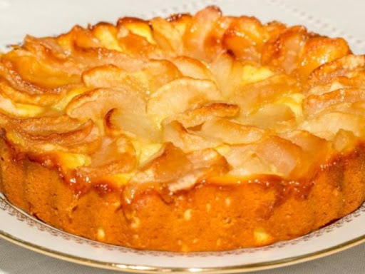

Мучное кондитерское изделие, булочка в форме полумесяца из слоёного теста с содержанием сливочного масла не менее 82 % жирности.
Очень популярен во Франции, где подаётся на завтрак к кофе для взрослых или к какао для детей; своеобразный символ этой страны.
Мучное кондитерское изделие, булочка в форме полумесяца из слоёного теста с содержанием сливочного масла не менее 82 % жирности.
Очень популярен во Франции, где подаётся на завтрак к кофе для взрослых или к какао для детей; своеобразный символ этой страны.

Одна из самых распространённых разновидностей пирога, для начинения которого используются яблоки. Поскольку яблоки являются одним из самых доступных фруктов умеренной полосы, яблочный пирог является одним из основных десертных блюд кулинарии разных европейских народов, в том числе и русских.
По праву могут считаться самыми "шведскими" булочками. С тех пор как первый рецепт булочек с корицей появился в кулинарных книгах, эта выпечка приобрела статус национального достояния. Шведы едят их на праздник, в будни, во время кофе-брейков, в кафе, дома, на улице. С булочками также тесно связана традиция шведских кофейных перерывов.